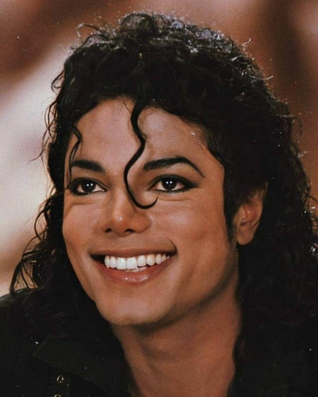
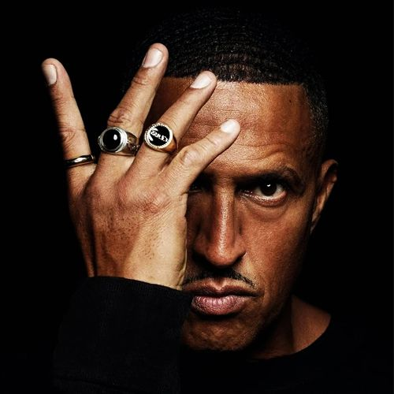
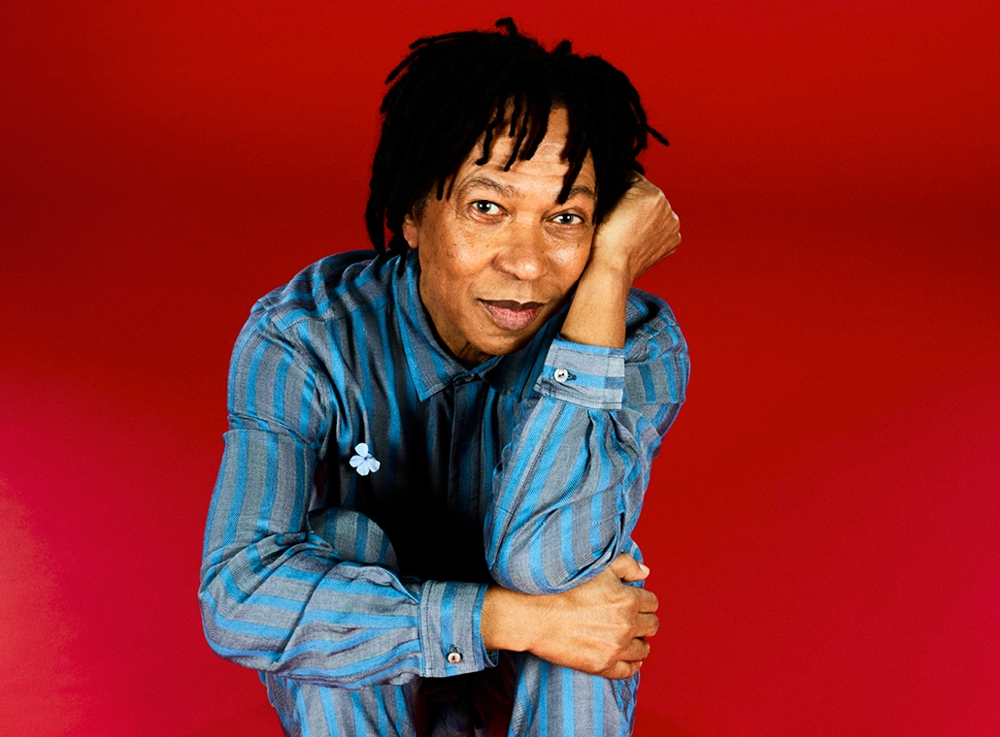
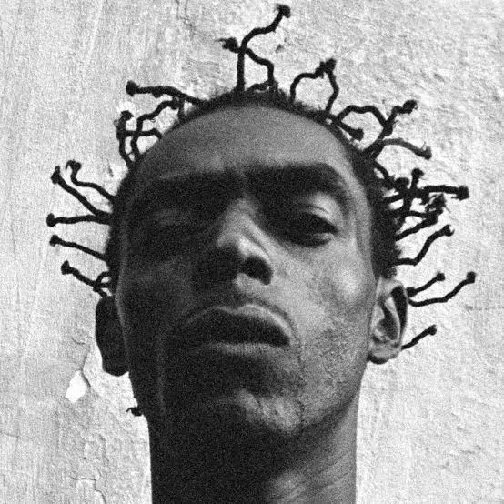
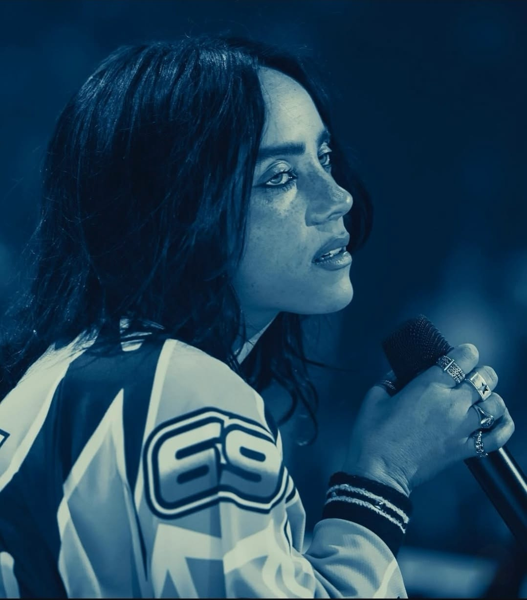
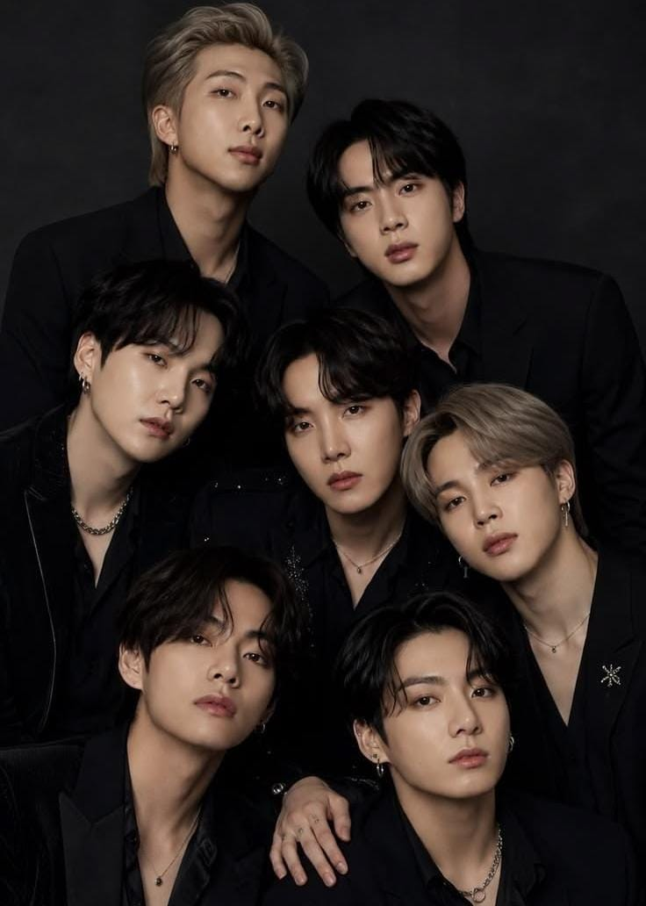
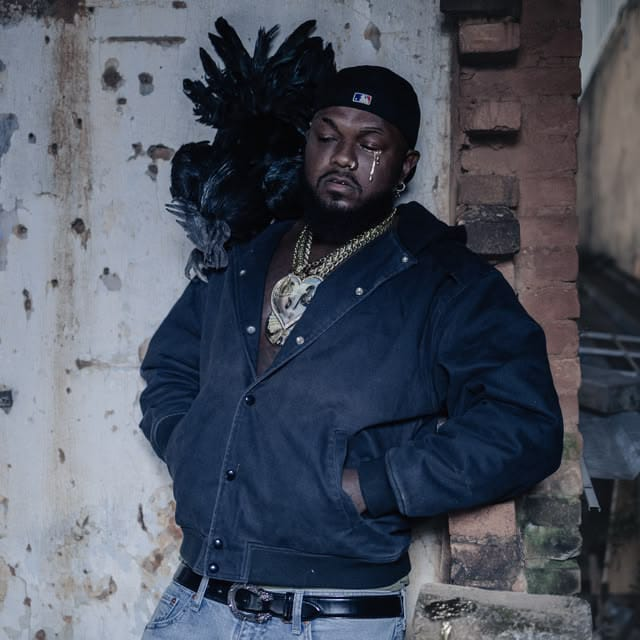
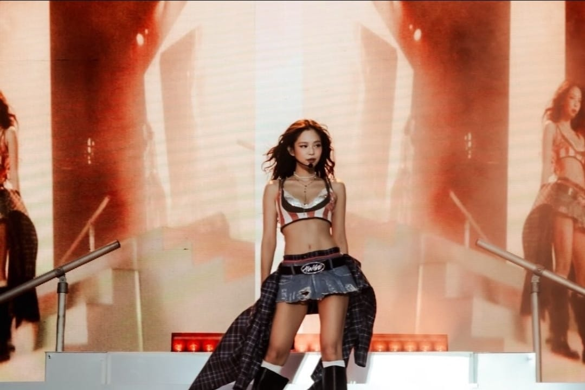
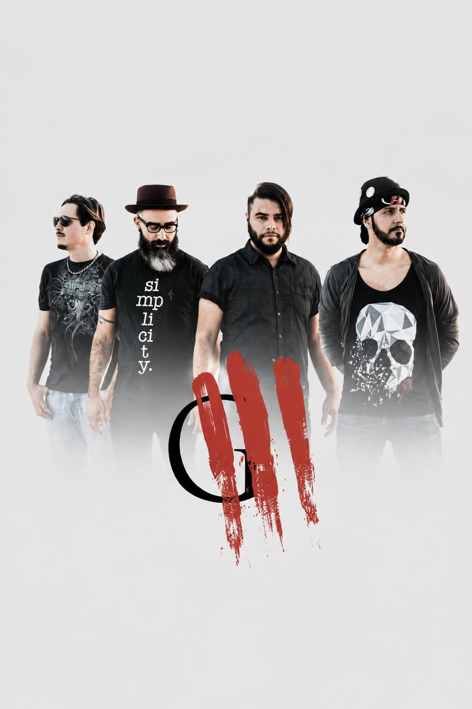
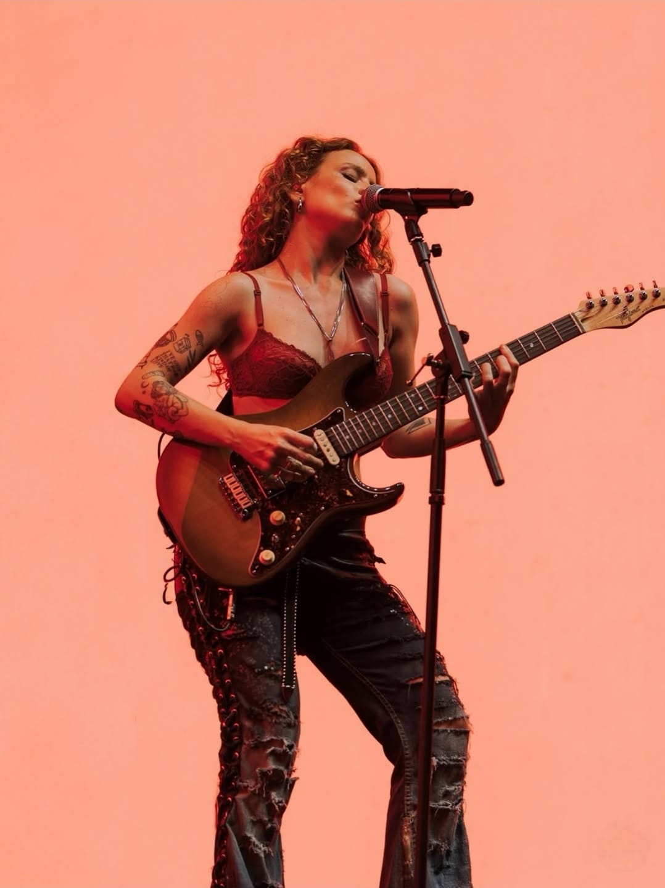

01. Michael Jackson

Cantor, compositor e dançarino norte-americano, é mundialmente
aclamado como o "Rei do Pop" e uma das figuras mais influentes da
história do entretenimento. Revolucionou a indústria fonográfica ao
transformar videoclipes em produções cinematográficas e popularizar
passos de dança icônicos.
-
1982: Lançou Thriller, que permanece como o álbum mais vendido de
todos os tempos no mundo inteiro.
-
1983: Popularizou globalmente o passo Moonwalk durante sua
apresentação histórica no especial Motown 25.
-
Reconhecimento: Venceu 13 prêmios Grammy e foi induzido duas vezes
ao Rock and Roll Hall of Fame.
02. Mano Brown

Rapper, compositor e produtor paulistano, é a voz mais importante da
história do rap nacional à frente dos Racionais MC's. Suas letras
transformaram o retrato das periferias, o racismo e a desigualdade
social em referência cultural, literária e política no Brasil.
-
1988: Fundou os Racionais MC's, o grupo mais influente do hip-hop
brasileiro.
-
1997: Lançou o álbum Sobrevivendo no Inferno, considerado um marco
histórico da música nacional.
-
Reconhecimento: Recebeu o título de Doutor Honoris Causa pela
Unicamp e pela UFSB por sua contribuição cultural.
03. Djavan

Cantor, compositor e violonista alagoano, é um dos maiores gênios da
Música Popular Brasileira. Reconhecido por sua assinatura melódica
única e harmonias sofisticadas, construiu um repertório atemporal
que funde MPB, jazz, blues e ritmos nordestinos.
-
Clássicos: É autor de hinos da música brasileira como "Oceano",
"Flor de Lis", "Samurai" e "Sina".
-
Impacto Internacional: Suas composições já foram gravadas por
lendas mundiais como Stevie Wonder, Carmen McRae e Al Jarreau.
-
Reconhecimento: Vencedor do Grammy Latino de Excelência Musical
pelo conjunto de sua obra.
04. Sabotage

Rapper, compositor e ator paulistano, conhecido eternamente como o
"Maestro do Canão". Pioneiro na fusão do rap com o samba e a MPB,
deixou um legado curto, mas imortal, retratando com autenticidade e
poesia a realidade das comunidades de São Paulo.
-
2000: Lançou seu único álbum de estúdio em vida, Rap É
Compromisso!, considerado uma obra-prima absoluta do gênero.
-
Cinema: Atuou em filmes aclamados internacionalmente, como O
Invasor (2001) e Carandiru (2003).
-
Legado: Tornou-se um mito da cultura hip-hop nacional,
influenciando praticamente todas as gerações seguintes do rap
brasileiro.
05. Billie Eilish

Cantora e compositora norte-americana que redefiniu a estética do
pop contemporâneo ao lado de seu irmão e produtor, Finneas. Ficou
mundialmente conhecida por suas produções minimalistas, vocais
sussurrados e composições intimistas que dialogam diretamente com a
nova geração.
-
2020: Tornou-se a artista mais jovem da história a vencer as
quatro categorias principais do Grammy em uma única noite.
-
Cinema: Venceu dois prêmios Oscar de Melhor Canção Original por
"No Time to Die" e "What Was I Made For?".
-
Impacto: Quebrou padrões visuais e sonoros da indústria pop com
álbuns aclamados como When We All Fall Asleep, Where Do We Go?.
06. BTS

Grupo sul-coreano formado por sete integrantes que se tornou o maior
fenômeno global da história do K-pop. Quebrou barreiras linguísticas
e culturais no ocidente, batendo recordes históricos de vendas e
engajamento com mensagens focadas na juventude e no amor próprio.
-
2018: Tornaram-se o primeiro ato coreano a alcançar o topo da
parada norte-americana Billboard 200.
-
2020: Fizeram história ao liderar a parada Billboard Hot 100 com o
hit mundial "Dynamite".
-
Impacto Global: Discursaram na Assembleia Geral da ONU, falaram na
Casa Branca sobre inclusão e esgotaram os maiores estádios do
mundo em turnês internacionais.
07. Djonga

Rapper e compositor mineiro, é o principal nome da geração
contemporânea do rap nacional. Conhecido por suas rimas afiadas,
presença de palco visceral e álbuns conceituais lançados anualmente,
consolidou-se como uma das vozes mais contundentes da música
brasileira atual.
-
Discografia: Lançou obras de enorme impacto crítico e comercial,
como Heresia (2017) e Ladrão (2019).
-
2020: Foi o primeiro artista brasileiro indicado ao prêmio BET Hip
Hop Awards, na categoria de Melhor Artista Internacional.
-
Palcos: Tornou-se presença obrigatória e destaque nos principais
festivais do país, como Rock in Rio e Lollapalooza.
08. Jennie

Cantora, rapper e compositora sul-coreana, destaque mundial como
integrante do BLACKPINK e em sua carreira solo. Consolidou-se como
um dos maiores ícones globais da música pop atual e uma das figuras
mais influentes da indústria da moda internacional.
-
Carreira Solo: Conquistou certificações de ouro nos EUA com hits
globais como "Mantra" e "Like JENNIE", além do álbum Ruby (2025).
-
BLACKPINK: Integra o primeiro grupo feminino de K-pop a liderar a
Billboard 200 e a ser atração principal do festival Coachella.
-
Premiações: Venceu quatro prêmios no Golden Disc Awards de 2026,
incluindo o prestigiado troféu de Artista do Ano.
09. Oficina G3

Banda paulistana formada em 1987, é o maior e mais longevo nome do
rock e metal cristão da América Latina. Quebrou barreiras dentro e
fora do segmento religioso ao unir peso instrumental, técnica
refinada e letras profundas que marcaram gerações.
-
2009: Venceu o Grammy Latino de Melhor Álbum de Música Cristã em
Língua Portuguesa com o disco Depois da Guerra.
-
Clássicos: Lançou álbuns emblemáticos do rock nacional pesado,
como Humanos e Além do Que os Olhos Podem Ver.
-
Excelência Técnica: Reconhecida por formar alguns dos
instrumentistas mais respeitados do rock brasileiro.
10. Carol Biazin

Cantora e compositora paranaense que se destacou como uma das
principais vozes da nova cena pop e R&B do Brasil. Reconhecida por
sua potência vocal, autenticidade artística e forte identidade
visual, conquistou espaço sólido na música pop nacional.
-
Composição: Assina sucessos próprios e já compôs faixas para
grandes nomes do pop brasileiro, como Luísa Sonza e Vitão.
-
Álbuns: Consolidou sua identidade musical com projetos aclamados
pelo público, como Beijo de Judas e REVERSA.
-
Reconhecimento: Foi indicada ao Prêmio Multishow e tornou-se
destaque recorrente nos palcos dos grandes festivais nacionais.